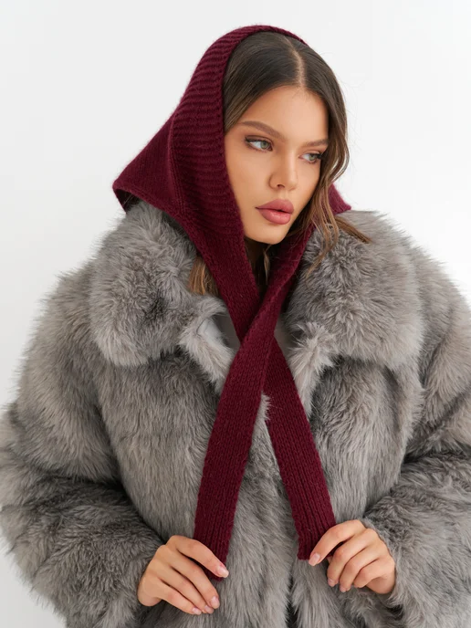

Шапка бини весенняя
1 455 ₽

ESSADORO · АРТ. 496560175
2 156 ₽
Вязаный головной убор — идеальный выбор для холодного сезона и межсезонья. Этот аксессуар сочетает в себе комфорт и практичность, обеспечивая защиту от ветра и холода зимой, а также даря легкость и уют осенью и весной. Косынка отлично подходит для тех, кто ценит удобство и стиль в одном изделии. Она может служить как капор или чепчик, создавая надежный барьер против непогоды в осенние или весенние дни. В составе пряжи присутствует шерсть, что обеспечивает теплоизоляцию в зимний период, не вызывая дискомфорта при длительном ношении. Благодаря универсальному дизайну станет идеальным головным убором для взрослыx женщин или девушек, а также для подростков девочек. Эта стильная модель шапки гармонично впишется в любой образ благодаря лаконичному дизайну. Вязаная бандана подчеркнет индивидуальность и станет функциональным дополнением гардероба на демисезонные периоды. Легкая шапка-косынка быстро надевается и удобно сидит на голове. Благодаря продуманной конструкции изделие сохраняет форму даже при активном использовании. Стильный модный головной убор в виде косынки отличная альтернатива капору или капюшону. Подойдет для прогулок, поездок или повседневного использования в прохладную погоду.
Оценок: 55
1 455 ₽
1 455 ₽
1 455 ₽
2 156 ₽